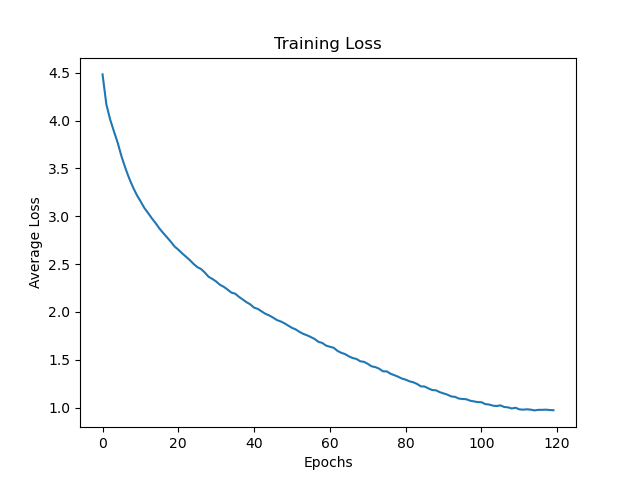
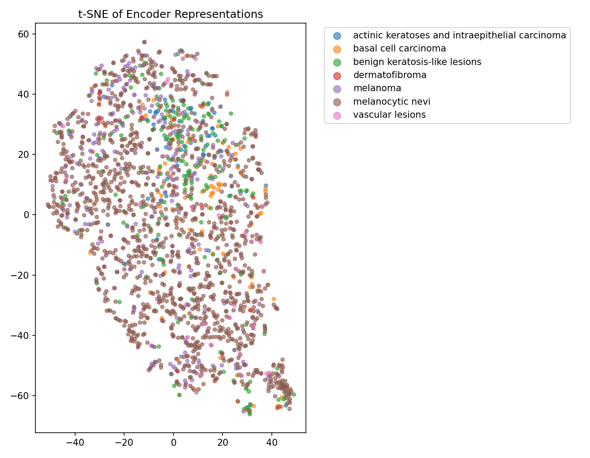
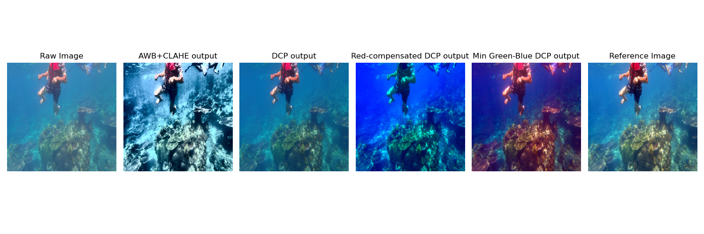
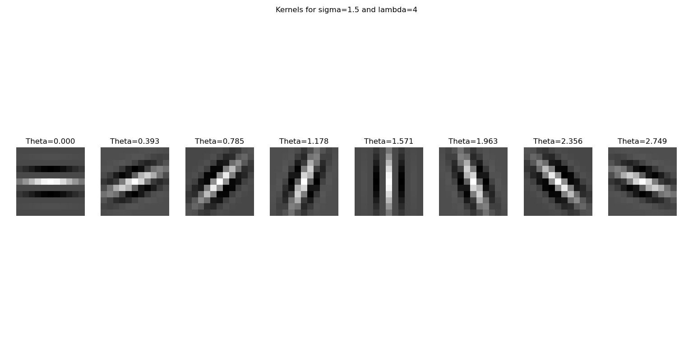

Recently completed M.Tech in Vision and Intelligent Systems at IIT Kharagpur. Passionate about Machine Learning, Computer Vision, and Deep Learning.
CGPA
GATE ECE 2024
Years Industry Experience
ML/CV Projects
I recently completed my M.Tech in Vision and Intelligent Systems from IIT Kharagpur. My interests span Computer Vision, Machine Learning and Deep Learning. I enjoy building algorithms from first principles and understanding the mathematical foundations behind modern AI systems. My recent work includes Vision Transformers, Self-Supervised Learning using SimCLR, Underwater Image Enhancement and Facial Expression Recognition.

Implemented a Vision Transformer in PyTorch without pre-built transformer modules and conducted ablation experiments on CIFAR-100 and Food-101 datasets, studying the impact of patch size, embedding dimension, depth, dropout, and learning rate scheduling.

Built a complete SimCLR self-supervised learning pipeline on DermaMNIST dataset using NT-Xent contrastive loss. Pretrained for 1000 epochs, then evaluated three downstream setups(frozen probe, fine-tune for 20 epochs, fine-tune for 100 epochs).

Implemented four classical enhancement pipelines from scratch on the UIEB dataset: max-RGB AWB + CLAHE, Basic DCP, Red Channel compensated DCP and Min Green-Blue DCP.

Developed a facial expression recognition pipeline using handcrafted multi-scale Gabor features and a Linear SVM classifier on the CK+ dataset.
Python, SQL
PyTorch
OpenCV
NumPy, Matplotlib
Email: sarupyamitrauemk@gmail.com